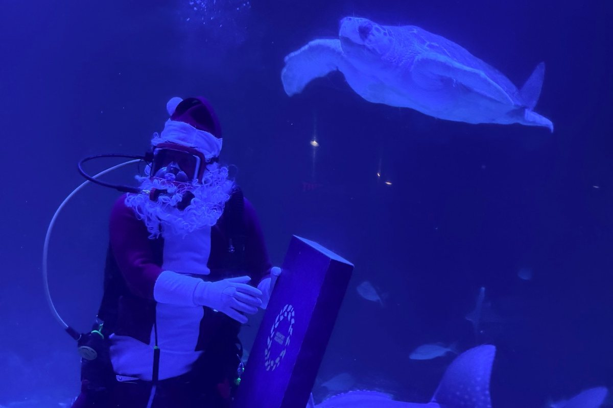

Accessible Ohio: Newport Aquarium
Cassidy Travel, independent travel advisor of Fora Travel. Checked October 2026; confirm before you go.

Newport Aquarium sits on the Newport on the Levee plaza in Newport, Kentucky, just across the Ohio River from downtown Cincinnati and about an hour from Waynesville. I have an annual pass, so this guide mixes the aquarium's official information with what I've seen on my own visits.
It covers parking and the entrance, getting around, wheelchair loans, Shark Bridge, the touch pools, sensory supports and restrooms.
Parking
Park in the Newport on the Levee garage and take the elevator up to the plaza level (PL). The accessible spaces are around the central elevator column and near the east elevator bay, so they're close to the elevator. Expect a long wait for the elevator up from the garage, especially when it's busy. Be patient.
The aquarium doesn't own or run the garage, so parking is paid separately.
The entrance
The main entrance is on the east side of the building, on the Newport on the Levee plaza. Elevators just off the lobby take you down to the exhibit level.
Getting around
The aquarium is wheelchair accessible throughout, with one exception: Shark Bridge (below). Manual and power wheelchairs, scooters, walkers and canes are welcome in all public areas; Segways aren't.
It gets crowded, especially on weekends. Go on a weekday or right at opening if you can.
Free wheelchair loans
Guest Services lends a limited number of manual wheelchairs for free, first come, first served. You leave a photo ID until the chair comes back. The aquarium also has a seated electric scooter for guests whose own devices don't meet its mobility device rules. Ask Guest Services about it when you arrive.
Shark Bridge
Shark Bridge, the rope bridge over the shark tank, is the one place you can't go in a wheelchair: you have to walk across it on your own. You won't miss much. The Shark Tank viewing area runs parallel to the bridge, so you see the same sharks from alongside it.
Touch pools
The touch pools have low access points you can reach from a wheelchair, and the staff are well trained to help. Just ask.
Strollers
Strollers are allowed, but the aquarium says you'll enjoy your visit more without one.
Sensory needs and autism
Newport Aquarium is a KultureCity Certified Sensory Inclusive venue, which means staff are trained to help guests with sensory needs. Free KultureCity sensory bags are available at the Guest Services Office in the Main Lobby, first come, first served, with an ID. Each bag has noise-canceling headphones, fidget tools and verbal cue cards.
The most popular exhibits get crowded and loud. Pick up a sensory bag before you head in, and plan a weekday visit if crowds are hard for someone in your group.
Restrooms
Family and companion restrooms are on the lower level, near the main elevator and Sharky's Café. I don't remember seeing an adult changing table, so ask Guest Services ahead of time if you need one.
Service animals
If you're bringing a service animal, call the aquarium ahead to ask which areas it can visit.
My take
Newport Aquarium works well in a wheelchair. The only spot you can't reach is Shark Bridge, and the view beside it is just as good. Budget time for the garage elevator, go on a weekday if you can, grab a free sensory bag at Guest Services, and ask the staff for help at the touch pools. They're good at it.
Official page: Newport Aquarium accessibility (opens in a new tab). More guides like this: Accessibility guides.
Planning a trip like this? There's no planning fee for vacations.